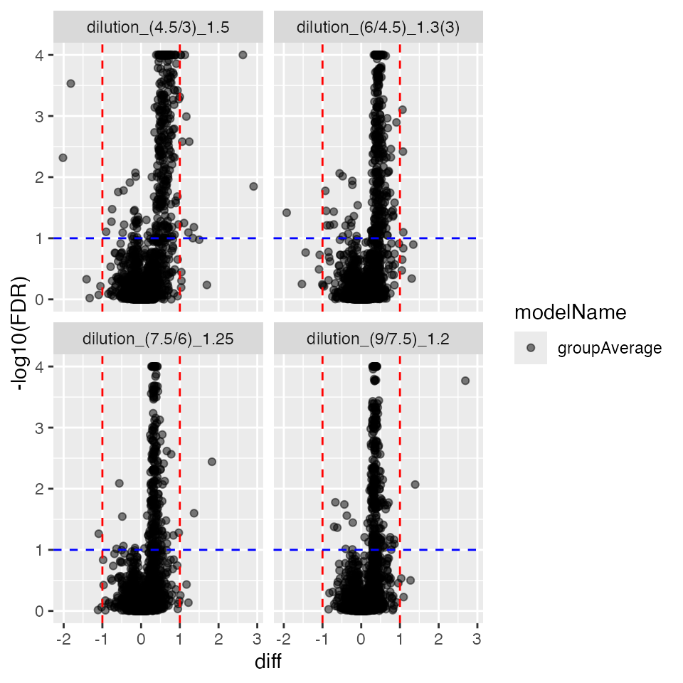
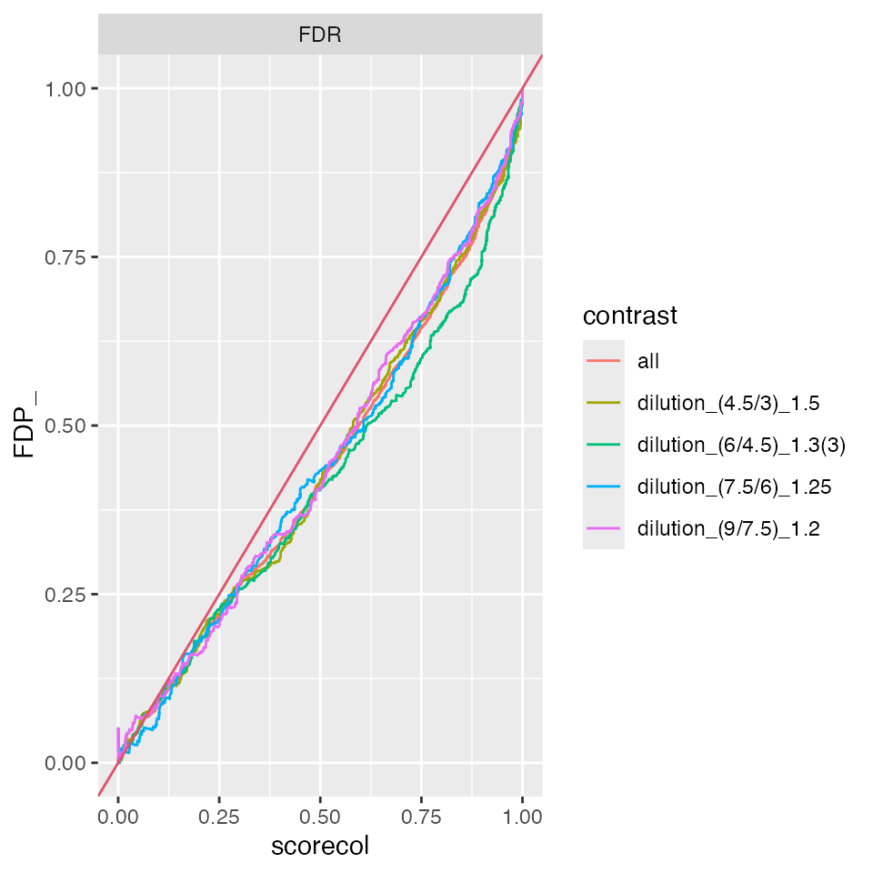
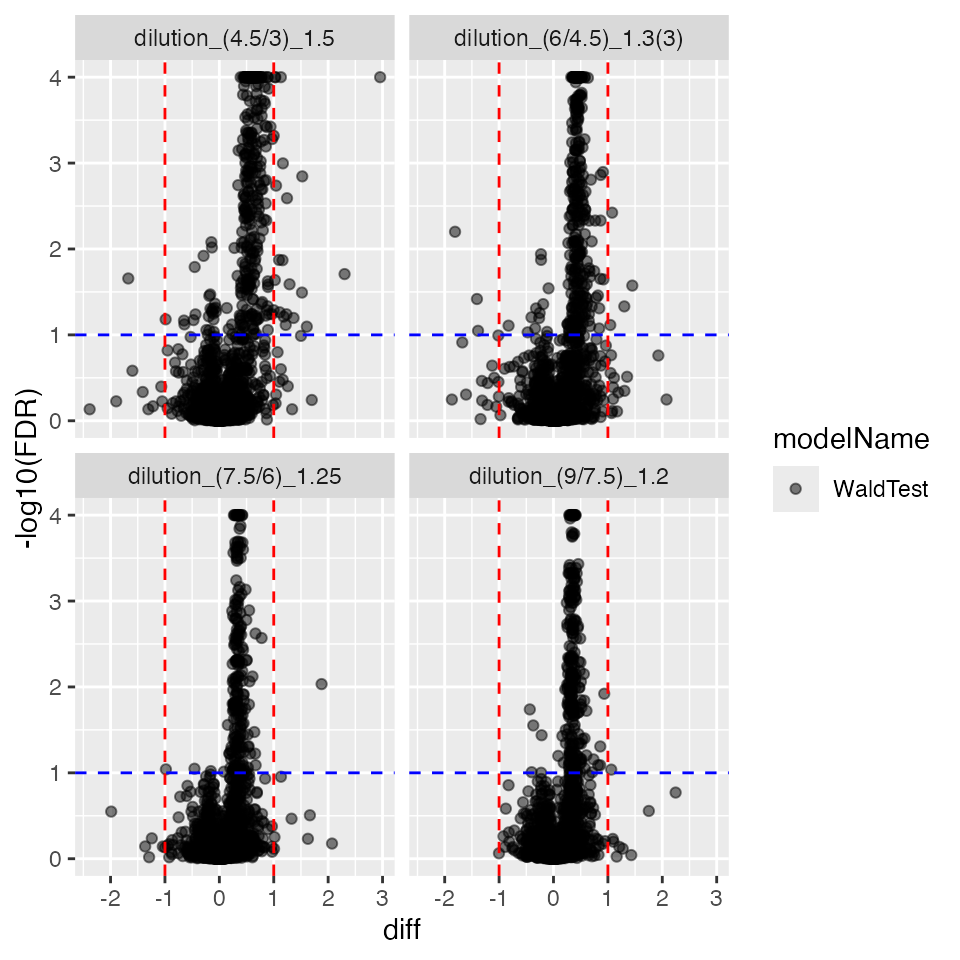
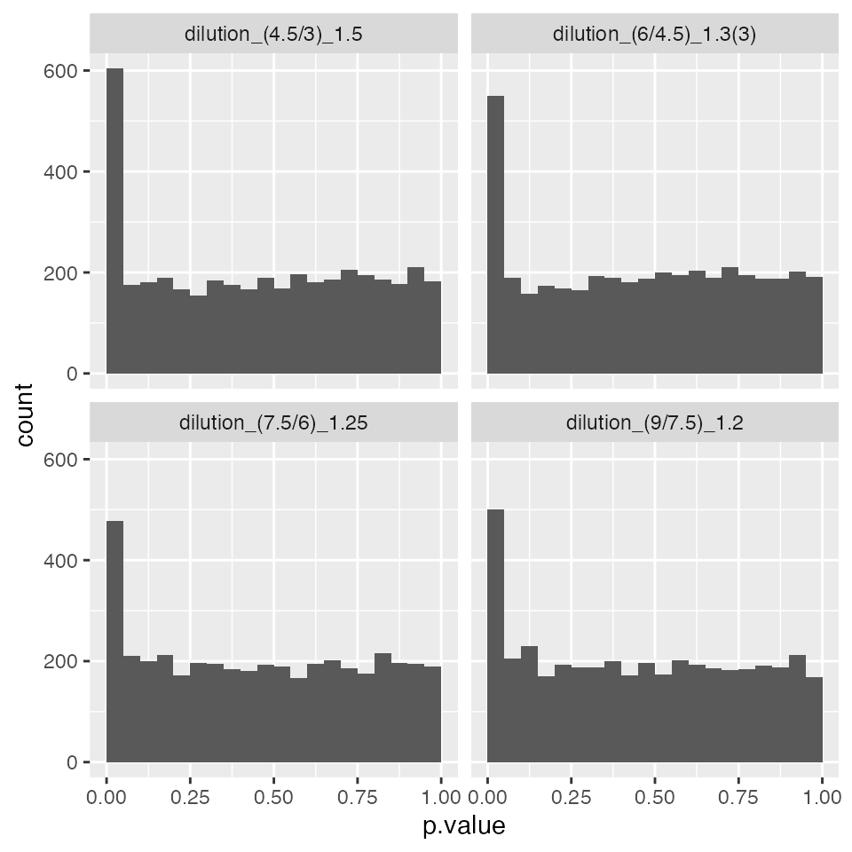
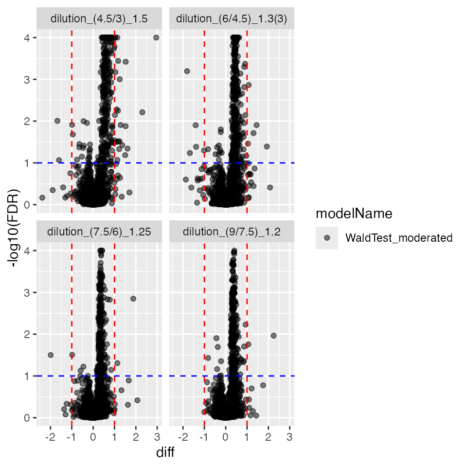
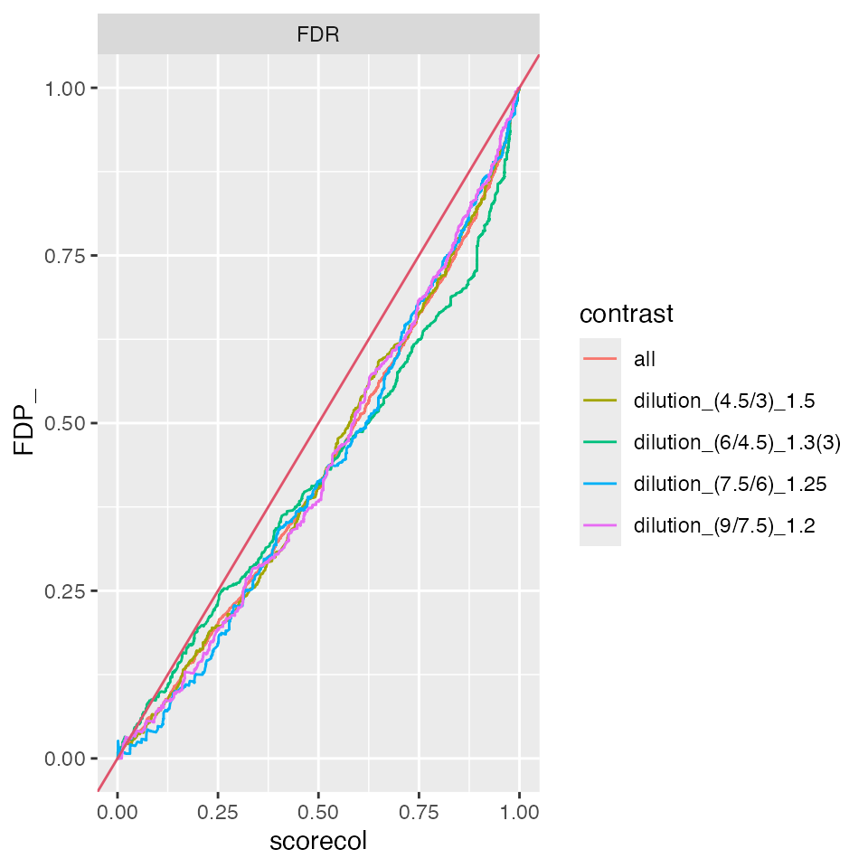
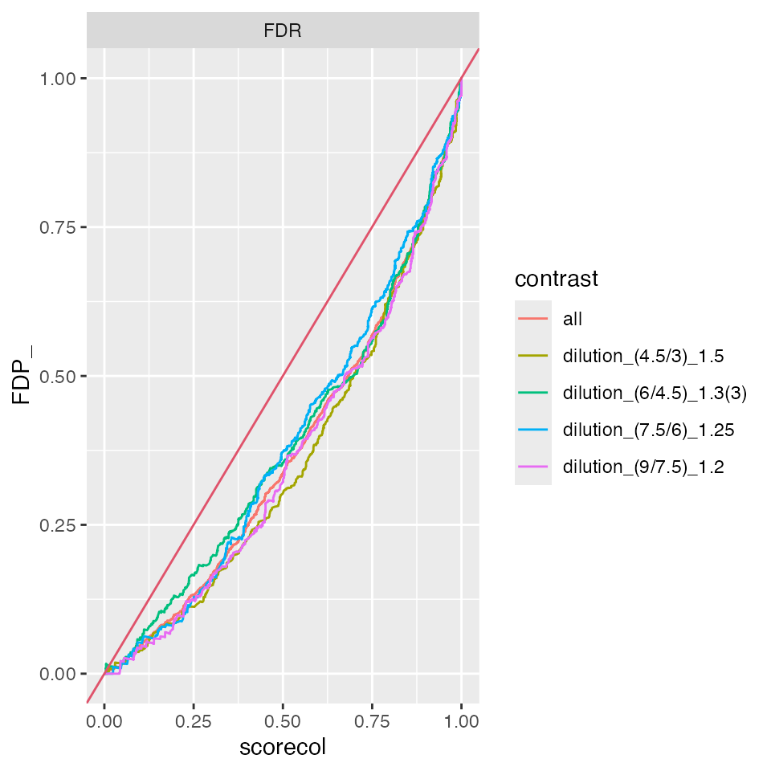
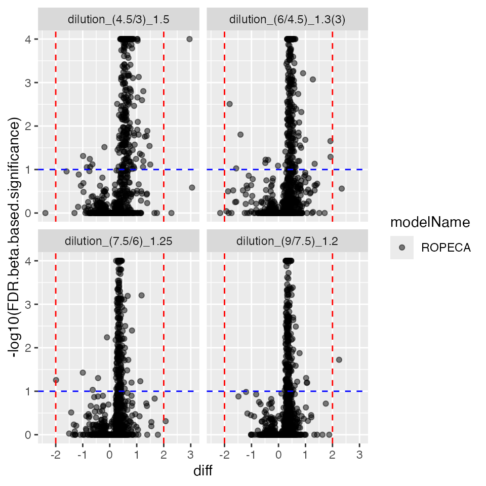
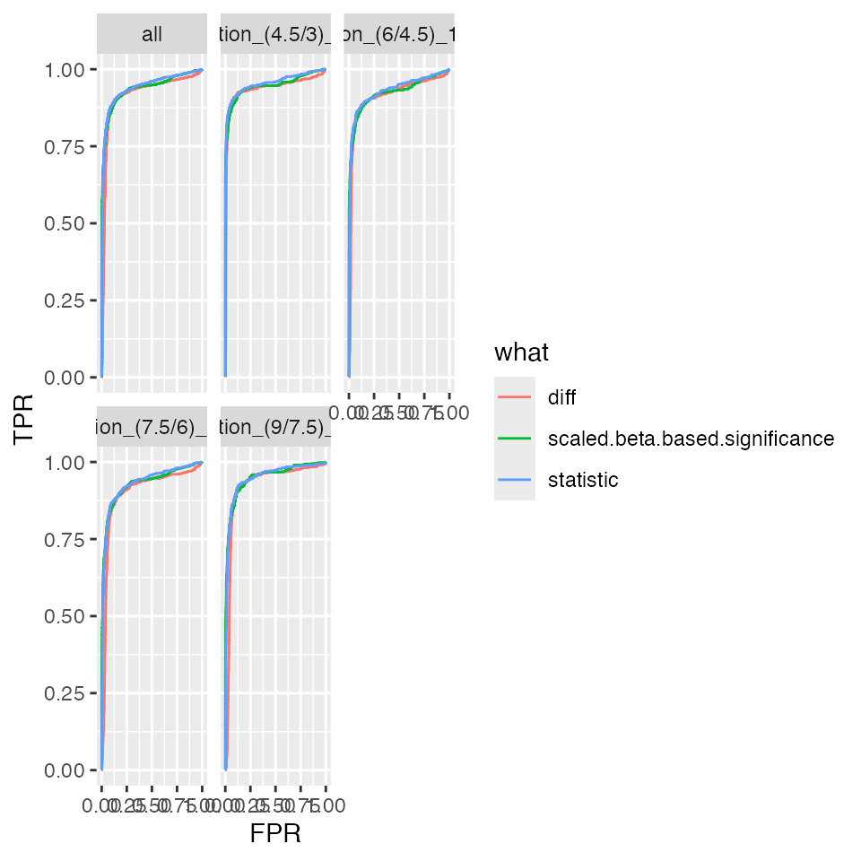
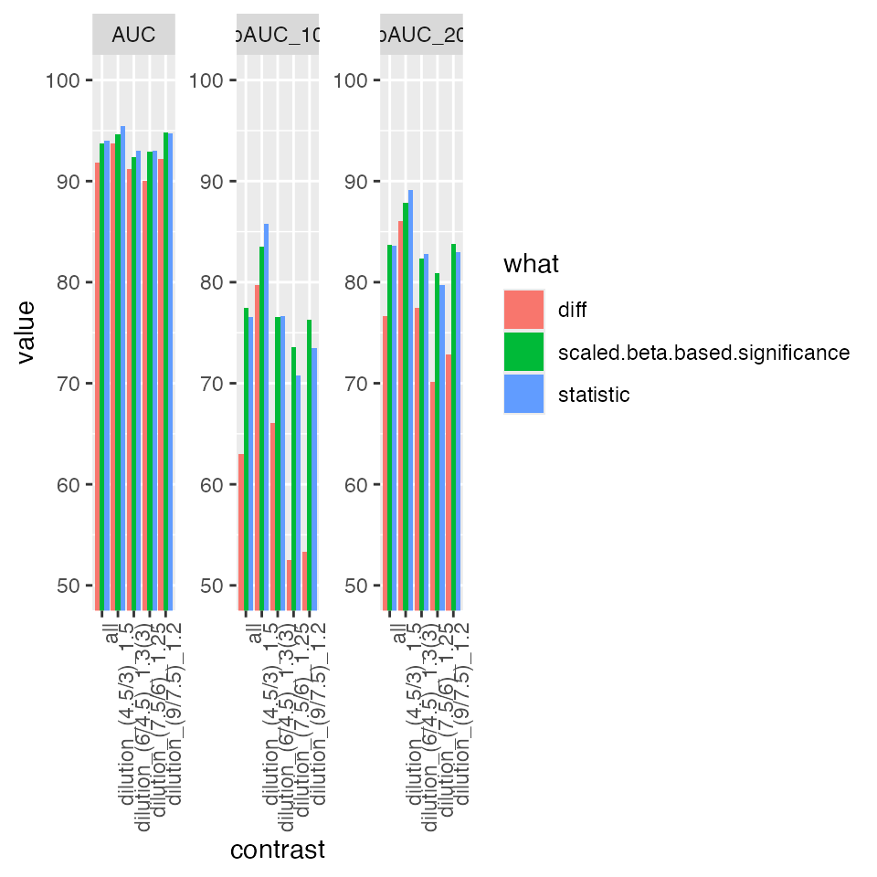

Benchmarking normalization, aggregation and models using the Ionstar Dataset
FGCZ - (Draft)
10 February, 2022
Source:../vignettes/BenchmarkingIonstarData.Rmd
BenchmarkingIonstarData.RmdPlease download and install the prolfquadata package
from github
conflicted::conflict_prefer("filter", "dplyr")Decide if you work with all data or for speedup with subset of data:
SUBSET <- FALSE
SUBSETNORM <- TRUE
SAVE <- FALSEWe start by loading the IonStar dataset and the annotation from the
prolfquadata package. The method
add_annotation adds the annotation to the data.
datadir <- file.path(find.package("prolfquadata") , "quantdata")
inputMQfile <- file.path(datadir,
"MAXQuant_IonStar2018_PXD003881.zip")
inputAnnotation <- file.path(datadir, "annotation_Ionstar2018_PXD003881.xlsx")
mqdata <- list()
mqdata$data <- prolfqua::tidyMQ_Peptides(inputMQfile)
length(unique(mqdata$data$proteins))## [1] 5295
mqdata$config <- prolfqua::create_config_MQ_peptide()
annotation <- readxl::read_xlsx(inputAnnotation)
res <- prolfqua::add_annotation(
mqdata$data,
annotation,
fileName = "raw.file"
)The setup_analysis asserts that all columns specified in
the configruation are present in the data. For more details about the
prolfqua configuration see the vignette “Creating
Configurations”.
mqdata$config$table$factors[["dilution."]] = "sample"
mqdata$config$table$factors[["run_Id"]] = "run_ID"
mqdata$config$table$factorDepth <- 1
mqdata$data <- prolfqua::setup_analysis(res, mqdata$config)Data normalization
First we remove all contaminant, decoy proteins from the list, than we remove 0 intensity values, then filter for 2 peptides per protein.
lfqdata <- prolfqua::LFQData$new(mqdata$data, mqdata$config)
lfqdata$data <- lfqdata$data |> dplyr::filter(!grepl("^REV__|^CON__", protein_Id))
lfqdata$filter_proteins_by_peptide_count()
sr <- lfqdata$get_Summariser()
lfqdata$remove_small_intensities()
sr <- lfqdata$get_Summariser()
sr$hierarchy_counts()## # A tibble: 1 × 3
## isotope protein_Id peptide_Id
## <chr> <int> <int>
## 1 light 4178 29879We will normalize the data using the ‘LFQTransformer’ class. Since we
know that the Human proteins are the Matrix in the experiment we will
normalize the data using HUMAN proteins only. To this task we subset the
dataset by filtering for HUMAN proteins only and then use the
LFQDataTransformer to normalize the data.
tr <- lfqdata$get_Transformer()
subset_h <- lfqdata$get_copy()
subset_h$data <- subset_h$data |> dplyr::filter(grepl("HUMAN", protein_Id))
subset_h <- subset_h$get_Transformer()$log2()$lfq
lfqdataNormalized <- tr$log2()$robscale_subset(lfqsubset = subset_h, preserveMean = FALSE )$lfqThe figures below show the intensity distribution before and after normalization.
before <- lfqdata$get_Plotter()
before$intensity_distribution_density()
after <- lfqdataNormalized$get_Plotter()
after$intensity_distribution_density()Create a sample of N proteins to speed up computations of models and contrasts.
if (SUBSET) {
N <- 200
mqdataSubset <- lfqdata$get_sample(size = N, seed = 2020)
lfqNormSubset <- lfqdataNormalized$get_sample(size = N, seed = 2020)
lfqNormSubset$hierarchy_counts()
} else {
mqdataSubset <- lfqdata$get_copy()
lfqNormSubset <- lfqdataNormalized$clone()
lfqNormSubset$hierarchy_counts()
}## # A tibble: 1 × 3
## isotope protein_Id peptide_Id
## <chr> <int> <int>
## 1 light 4178 29879Inferring Protein intensities
We will be using the LFQDataAggregator class. To
estimate protein intensities using Tukey’s median polish we need to use
log2 transformed peptide intensities. The figure below shows the the
peptide intensities used for estimation and the protein intensity
estimates (black dashed line).
lfqNormSubset$config$table$getWorkIntensity()## [1] "transformedIntensity"
pl <- lfqNormSubset$get_Plotter()
pl$intensity_distribution_density()
lfqAggMedpol <- lfqNormSubset$get_Aggregator()
lfqAggMedpol$medpolish()
#xx <- lfqAggMedpol$plot()
#gridExtra::grid.arrange(grobs = xx$plots[1:6])We can also estimate the protein intensities using the top N most abundant peptides. In this case we are using the untransformed protein intensities. The figure below shows the estimated protein intensities.
lfqAggregator <- LFQDataAggregator$new(mqdataSubset, "protein_topN")
lfqAggregator$mean_topN()
topN <- lfqAggregator$plot()
topN$plots[[1]]Model Fitting
We will be fitting tree models to the data. The first model is a
linear model as implemented by the R function lm fitted to
protein intensities inferred from peptide intensities using the
LFQAggregator. The second model is mixed effects model as implemented in
the R function lmer fitted to peptide level intensites,
where we model the peptide measurements as repeated measurements of the
protein. The third is again a linear model but fitted to peptide
intensities. By this we obtain for each peptide intensites a linear
model.
Fitting a linear model to the protein intensities
protLFQ <- lfqAggMedpol$lfq_agg
sr <- protLFQ$get_Summariser()
sr$hierarchy_counts()## # A tibble: 1 × 2
## isotope protein_Id
## <chr> <int>
## 1 light 4178
lmmodel <- "~ dilution."
lmmodel <- paste0(protLFQ$config$table$getWorkIntensity() , lmmodel)
lfqNormSubset$config$table$hierarchyDepth <- 1
modelFunction <- prolfqua::strategy_lm( lmmodel, model_name = "Model")
modLinearProt <- prolfqua::build_model(protLFQ$data, modelFunction)
modLinearProt$anova_histogram()$plotFitting a mixed effects model to peptide intensities
lmmodel <- "~ dilution. + (1|peptide_Id) + (1|sampleName)"
lmmodel <- paste0(lfqNormSubset$config$table$getWorkIntensity() , lmmodel)
lfqNormSubset$config$table$hierarchyDepth <- 1
modelFunction <- prolfqua::strategy_lmer( lmmodel, model_name = "Model")
modMixedProtLevel <- prolfqua::build_model(lfqNormSubset$data, modelFunction)
modMixedProtLevel$anova_histogram()$plotFitting peptide level models
lmmodel <- "~ dilution."
lfqNormSubset$config$table$hierarchyDepth## [1] 1
lfqNormSubset$config$table$hierarchyDepth <- 2
lmmodel <- paste0(lfqNormSubset$config$table$getWorkIntensity() , lmmodel)
modelFunction <- prolfqua::strategy_lm( lmmodel, model_name = "Model")
modLMPepLevel <- prolfqua::build_model(lfqNormSubset$data,
modelFunction,
subject_Id = lfqNormSubset$subjectId())
modLMPepLevel$anova_histogram()$plotComputing Contrasts
Once models are fitted contrasts can be computed. The R code below defines all possible contrasts among conditions for the ionstar dataset.
DEBUG <- FALSE
Contrasts <- c(
"dilution_(9/3)_3" = "dilution.e - dilution.a",
"dilution_(9/4.5)_2" = "dilution.e - dilution.b",
"dilution_(9/6)_1.5" = "dilution.e - dilution.c",
"dilution_(9/7.5)_1.2" = "dilution.e - dilution.d",
"dilution_(7.5/3)_2.5" = "dilution.d - dilution.a",
"dilution_(7.5/4.5)_1.6(6)" = "dilution.d - dilution.b",
"dilution_(7.5/6)_1.25" = "dilution.d - dilution.c",
"dilution_(6/3)_2" = "dilution.c - dilution.a",
"dilution_(6/4.5)_1.3(3)" = "dilution.c - dilution.b",
"dilution_(4.5/3)_1.5" = "dilution.b - dilution.a"
)
tt <- Reduce(rbind, strsplit(names(Contrasts),split = "_"))
tt <- data.frame(tt)[,2:3]
colnames(tt) <- c("ratio" , "expected fold-change")
tt <- tibble::add_column(tt, contrast = Contrasts, .before = 1)
prolfqua::table_facade(tt, caption = "All possible Contrasts given 5 E. coli dilutions of the Ionstar Dataset")| contrast | ratio | expected fold-change | |
|---|---|---|---|
| init | dilution.e - dilution.a | (9/3) | 3 |
| X | dilution.e - dilution.b | (9/4.5) | 2 |
| X.1 | dilution.e - dilution.c | (9/6) | 1.5 |
| X.2 | dilution.e - dilution.d | (9/7.5) | 1.2 |
| X.3 | dilution.d - dilution.a | (7.5/3) | 2.5 |
| X.4 | dilution.d - dilution.b | (7.5/4.5) | 1.6(6) |
| X.5 | dilution.d - dilution.c | (7.5/6) | 1.25 |
| X.6 | dilution.c - dilution.a | (6/3) | 2 |
| X.7 | dilution.c - dilution.b | (6/4.5) | 1.3(3) |
| X.8 | dilution.b - dilution.a | (4.5/3) | 1.5 |
relevantContrasts <- c("dilution_(9/7.5)_1.2",
"dilution_(7.5/6)_1.25",
"dilution_(6/4.5)_1.3(3)",
"dilution_(4.5/3)_1.5" )
tt <- Reduce(rbind, strsplit(relevantContrasts,split = "_"))
tt <- data.frame(tt)[,2:3]
colnames(tt) <- c("ratio" , "expected fold-change")
tt <- tibble::add_column(tt, contrast = Contrasts[names(Contrasts) %in% relevantContrasts], .before = 1)
prolfqua::table_facade(tt, caption = "Contrasts used for benchmark.")| contrast | ratio | expected fold-change | |
|---|---|---|---|
| init | dilution.e - dilution.d | (9/7.5) | 1.2 |
| X | dilution.d - dilution.c | (7.5/6) | 1.25 |
| X.1 | dilution.c - dilution.b | (6/4.5) | 1.3(3) |
| X.2 | dilution.b - dilution.a | (4.5/3) | 1.5 |
There are, as of today, four contrasts classes in the package prolfqua+ - ‘ContrastsSimpleImputed’ : contrast computation with imputation of fold changes and t-statistic estimation using pooled variances. - ‘Contrasts’ : uses Wald test, - ‘ContrastsModerated’ : applies variance moderation:, - ‘ContrastsROPECA’ implements difference and p-value aggregation
Contrasts with Imputation
In order to estimate differences (fold-changes), statistics and p-values of proteins for which linear models could not be fitted because of an excess of missing measurements, the following procedure is applied. The mean intensity of a protein in a condition is computed. For the proteins with no observation in a condition, we infer their intensities by using the mean of the 10% smallest average peptide intensities in the dataset. The standard deviation of the protein is estimated using the pooled variances of the condition where the variance could be estimated.
# ContrastsSimpleImpute$debug("get_contrasts")
contrImp <- prolfqua::ContrastsSimpleImpute$new(
protLFQ,
relevantContrasts,
probs = 0.01)
bb <- contrImp$get_contrasts()
plc <- contrImp$get_Plotter()
plc$volcano()## $FDR
plc$histogram()## $p.value##
## $FDR
allContrasts <- list()
allContrasts$imputation <- contrImp$get_contrasts()
ttd <- prolfqua::ionstar_bench_preprocess(contrImp$get_contrasts())
benchmark_imputation <- prolfqua::make_benchmark(
ttd$data,
model_description = "med. polish and lm. imputation",
model_name = "prot_imputation",
FDRvsFDP = list(list(score = "FDR", desc = FALSE))
)
benchmark_imputation$get_confusion_FDRvsFDP()## # A tibble: 33,280 × 17
## scorecol TP what F_ T_ R FDP TP_hits FN_hits FP_hits TN_hits
## <dbl> <lgl> <chr> <int> <int> <int> <dbl> <int> <int> <int> <int>
## 1 1.00e-9 TRUE FDR 14076 2564 1 0 1 2563 0 14076
## 2 6.54e-9 TRUE FDR 14076 2564 2 0 2 2562 0 14076
## 3 6.54e-9 TRUE FDR 14076 2564 3 0 3 2561 0 14076
## 4 1.52e-8 TRUE FDR 14076 2564 4 0 4 2560 0 14076
## 5 1.56e-8 TRUE FDR 14076 2564 5 0 5 2559 0 14076
## 6 1.56e-8 TRUE FDR 14076 2564 6 0 6 2558 0 14076
## 7 1.56e-8 TRUE FDR 14076 2564 7 0 7 2557 0 14076
## 8 1.56e-8 TRUE FDR 14076 2564 8 0 8 2556 0 14076
## 9 1.56e-8 TRUE FDR 14076 2564 9 0 9 2555 0 14076
## 10 1.56e-8 TRUE FDR 14076 2564 10 0 10 2554 0 14076
## # … with 33,270 more rows, and 6 more variables: FPR <dbl>, TPR <dbl>,
## # ACC <dbl>, FDP_ <dbl>, model_name <chr>, contrast <chr>
benchmark_imputation$plot_ROC(xlim = 0.1)
benchmark_imputation$plot_FDRvsFDP()
prolfqua::table_facade(benchmark_imputation$smc$summary, caption = "Nr of proteins with Nr of estimated contrasts.")| nr_missing | protein_Id |
|---|---|
| 0 | 4160 |
| 4 | 18 |
benchmark_imputation$pAUC_summaries()## $barp
##
## $ftable
## $ftable$content
## # A tibble: 15 × 5
## # Groups: contrast [5]
## contrast what AUC pAUC_10 pAUC_20
## <chr> <chr> <dbl> <dbl> <dbl>
## 1 all diff 92.1 64.0 77.3
## 2 all scaled.p.value 92.6 71.9 78.7
## 3 all statistic 92.5 71.0 78.3
## 4 dilution_(4.5/3)_1.5 diff 93.4 78.2 84.6
## 5 dilution_(4.5/3)_1.5 scaled.p.value 93.8 82.7 85.8
## 6 dilution_(4.5/3)_1.5 statistic 93.7 81.7 85.3
## 7 dilution_(6/4.5)_1.3(3) diff 91.7 65.6 78.1
## 8 dilution_(6/4.5)_1.3(3) scaled.p.value 92.2 73.0 79.1
## 9 dilution_(6/4.5)_1.3(3) statistic 92.0 71.7 78.4
## 10 dilution_(7.5/6)_1.25 diff 90.5 54.9 71.8
## 11 dilution_(7.5/6)_1.25 scaled.p.value 91.2 65.0 73.6
## 12 dilution_(7.5/6)_1.25 statistic 91.1 64.4 73.3
## 13 dilution_(9/7.5)_1.2 diff 92.8 56.2 74.6
## 14 dilution_(9/7.5)_1.2 scaled.p.value 93.2 66.2 76.2
## 15 dilution_(9/7.5)_1.2 statistic 93.1 65.3 75.8
##
## $ftable$caption
## [1] "AUC, and pAUC at 0.1 and 0.2 FPR for (NC) med. polish and lm. imputation"
##
## $ftable$digits
## [1] 2
allBenchmarks <- list()
allBenchmarks$benchmark_imputation <- benchmark_imputationContrasts from linear model
dim(modLinearProt$modelDF)## [1] 4178 9
contrProt <- prolfqua::Contrasts$new(modLinearProt, relevantContrasts)
pl <- contrProt$get_Plotter()
pl$volcano()## $FDR
pl$histogram()## $p.value
##
## $FDR
allContrasts$Prot <- contrProt$get_contrasts()
ttd <- prolfqua::ionstar_bench_preprocess(contrProt$get_contrasts())
ttd$data$protein_Id |> unique() |> length()## [1] 4173
benchmark_Prot <- prolfqua::make_benchmark(
ttd$data,
model_description = "med. polish and lm",
model_name = "prot_med_lm"
)
prolfqua::table_facade(benchmark_Prot$smc$summary, caption = "Nr of proteins with Nr of estimated contrasts.")| nr_missing | protein_Id |
|---|---|
| 0 | 4042 |
| 1 | 14 |
| 2 | 74 |
| 3 | 17 |
| 4 | 26 |
#benchmark_Prot$plot_score_distribution()
benchmark_Prot$plot_FDRvsFDP()
allBenchmarks$benchmark_Prot <- benchmark_ProtAdding Moderation
contrProtModerated <- prolfqua::ContrastsModerated$new(contrProt)
contrProtModerated$get_Plotter()$volcano()$FDR
## [1] 4173
allContrasts$ProtModerated <- contrProtModerated$get_contrasts()
ttd <- prolfqua::ionstar_bench_preprocess(contrProtModerated$get_contrasts())
benchmark_ProtModerated <- prolfqua::make_benchmark(
ttd$data,
model_description = "med. polish and lm moderated",
model_name = "prot_med_lm_moderated")
prolfqua::table_facade(benchmark_ProtModerated$smc$summary,
caption = "Nr of proteins with Nr of estimated contrasts.")| nr_missing | protein_Id |
|---|---|
| 0 | 4042 |
| 1 | 14 |
| 2 | 74 |
| 3 | 17 |
| 4 | 26 |
benchmark_ProtModerated$plot_FDRvsFDP()
allBenchmarks$benchmark_ProtModerated <- benchmark_ProtModeratedContrasts from mixed effect models
contrProtMixed <- prolfqua::Contrasts$new(modMixedProtLevel, relevantContrasts, modelName = "WaldTestMixed")
pl <- contrProtMixed$get_Plotter()
pl$volcano()$FDR
pl$histogram()$p.value
pl$histogram()$FDR
## [1] 3939
allContrasts$contrProtMixed <- contrProtMixed$get_contrasts()
ttd <- prolfqua::ionstar_bench_preprocess(contrProtMixed$get_contrasts())
benchmark_mixed <- prolfqua::make_benchmark(
ttd$data,
model_description = "mixed effect model",
model_name = "prot_mixed_effect"
)
benchmark_mixed$complete(FALSE)
prolfqua::table_facade(benchmark_mixed$smc$summary,
caption = "Nr of proteins with Nr of estimated contrasts.")| nr_missing | protein_Id |
|---|---|
| 0 | 3939 |
#benchmark_mixed$plot_score_distribution()
benchmark_mixed$plot_FDRvsFDP()
allBenchmarks$benchmark_mixed <- benchmark_mixedAdding Moderation
Since moderation requires a degrees of freedom estimate to determine the prior degrees of freedom we examine the denominator degrees of freedom produced by the methods implemented in lmerTest (see Histogram).
ctr <- contrProtMixed$get_contrasts()
df <- ctr$df
df[df > 59] <- 60
range(df)## [1] 1.465724 60.000000Histogram of degrees of freedom for mixed model
contrProtMixedModerated <- prolfqua::ContrastsModerated$new(contrProtMixed)
contrProtMixedModerated$get_Plotter()$volcano()$FDR
allContrasts$contrProtMixedModerated <- contrProtMixedModerated$get_contrasts()
ttd <- prolfqua::ionstar_bench_preprocess(contrProtMixedModerated$get_contrasts())
benchmark_mixedModerated <- prolfqua::make_benchmark(
ttd$data,
model_description = "mixed effect model moderated",
model_name = "prot_mixed_effect_moderated")
prolfqua::table_facade(benchmark_mixedModerated$smc$summary, caption = "Nr of proteins with Nr of computed contrasts.")| nr_missing | protein_Id |
|---|---|
| 0 | 3939 |
#benchmark_mixedModerated$plot_score_distribution()
benchmark_mixedModerated$plot_FDRvsFDP()
allBenchmarks$benchmark_mixedModerated <- benchmark_mixedModeratedProtein level contrasts from peptide models
To estimate regulation probabilities using the ROPECA approach we can chain the contrast computation methods. First we compute contrasts on peptide level, than we moderated the variance, t-statistics and p-values and finally we aggregate the fold change estimates and p-values.
contrROPECA <- prolfqua::Contrasts$new(modLMPepLevel, relevantContrasts) |>
prolfqua::ContrastsModerated$new() |>
prolfqua::ContrastsROPECA$new()
contrROPECA$get_Plotter()$volcano()## $FDR.beta.based.significance
contrROPECA$get_Plotter()$histogram()## $beta.based.significance##
## $FDR.beta.based.significance
allContrasts$contrProtMixedModerated <- contrProtMixedModerated$get_contrasts()
ttd <- prolfqua::ionstar_bench_preprocess(contrROPECA$get_contrasts())
ttd$data## # A tibble: 16,692 × 14
## modelName protein_Id contrast n diff statistic group_1_name group_1
## <chr> <chr> <chr> <int> <dbl> <dbl> <chr> <dbl>
## 1 ROPECA sp|A0A0U1RRL… dilutio… 2 NA NA dilution.b NA
## 2 ROPECA sp|A0A0U1RRL… dilutio… 2 NA NA dilution.c -1.82
## 3 ROPECA sp|A0A0U1RRL… dilutio… 2 NA NA dilution.d -1.63
## 4 ROPECA sp|A0A0U1RRL… dilutio… 2 NA NA dilution.e -1.67
## 5 ROPECA sp|A0AVT1|UB… dilutio… 11 -0.0131 -0.0211 dilution.b -1.23
## 6 ROPECA sp|A0AVT1|UB… dilutio… 11 0.0207 0.0968 dilution.c -1.18
## 7 ROPECA sp|A0AVT1|UB… dilutio… 11 -0.110 -0.424 dilution.d -1.33
## 8 ROPECA sp|A0AVT1|UB… dilutio… 11 0.0143 0.0694 dilution.e -1.30
## 9 ROPECA sp|A0FGR8|ES… dilutio… 16 0.0158 0.110 dilution.b -0.381
## 10 ROPECA sp|A0FGR8|ES… dilutio… 16 -0.126 -0.668 dilution.c -0.328
## # … with 16,682 more rows, and 6 more variables: group_2_name <chr>,
## # group_2 <dbl>, beta.based.significance <dbl>,
## # FDR.beta.based.significance <dbl>, species <chr>, TP <lgl>
benchmark_ropeca <- prolfqua::make_benchmark(
ttd$data,
toscale = c("beta.based.significance"),
benchmark = list(
list(score = "diff", desc = TRUE),
list(score = "statistic", desc = TRUE),
list(score = "scaled.beta.based.significance", desc = TRUE)
),
model_description = "Ropeca",
model_name = "ropeca",
FDRvsFDP = list(list(score = "FDR.beta.based.significance", desc = FALSE))
)
prolfqua::table_facade(
benchmark_ropeca$smc$summary,
caption = "Nr of proteins with Nr of estimated contrasts.")| nr_missing | protein_Id |
|---|---|
| 0 | 4016 |
| 1 | 16 |
| 2 | 79 |
| 3 | 26 |
| 4 | 36 |
benchmark_ropeca$plot_ROC(0.1)
benchmark_ropeca$plot_FDRvsFDP()
allBenchmarks$benchmark_ropeca <- benchmark_ropeca
benchmark_ropeca$pAUC_summaries()$ftable$content## # A tibble: 15 × 5
## # Groups: contrast [5]
## contrast what AUC pAUC_10 pAUC_20
## <chr> <chr> <dbl> <dbl> <dbl>
## 1 all diff 92.1 63.5 77.3
## 2 all scaled.beta.based.significance 94.1 78.8 84.7
## 3 all statistic 94.4 77.9 84.6
## 4 dilution_(4.5/3)_1.5 diff 93.7 79.7 86.0
## 5 dilution_(4.5/3)_1.5 scaled.beta.based.significance 94.8 84.1 88.0
## 6 dilution_(4.5/3)_1.5 statistic 95.4 85.8 89.1
## 7 dilution_(6/4.5)_1.3(3) diff 92.2 67.6 79.3
## 8 dilution_(6/4.5)_1.3(3) scaled.beta.based.significance 93.7 80.7 85.2
## 9 dilution_(6/4.5)_1.3(3) statistic 94.3 80.5 85.7
## 10 dilution_(7.5/6)_1.25 diff 90.1 52.7 70.6
## 11 dilution_(7.5/6)_1.25 scaled.beta.based.significance 92.9 74.1 81.5
## 12 dilution_(7.5/6)_1.25 statistic 93.1 71.4 80.4
## 13 dilution_(9/7.5)_1.2 diff 92.4 53.7 73.2
## 14 dilution_(9/7.5)_1.2 scaled.beta.based.significance 94.9 76.7 84.2
## 15 dilution_(9/7.5)_1.2 statistic 94.6 74.4 83.4Merging contrasts
Here we merge contrasts estimates from linear models and from the models with imputation.
all <- prolfqua::addContrastResults(prefer = contrProtModerated, add = contrImp)
merged <- all$merged
ttd <- prolfqua::ionstar_bench_preprocess(merged$get_contrasts())
benchmark_merged <- prolfqua::make_benchmark(
ttd$data,
model_description = "merge of prot moderated and imputed",
model_name = "prot_merged")
prolfqua::table_facade(benchmark_merged$smc$summary, caption = "Nr of proteins with Nr of estimated contrasts.")| nr_missing | protein_Id |
|---|---|
| 0 | 4160 |
| 4 | 18 |
#benchmark_mixedModerated$plot_score_distribution()
benchmark_merged$plot_FDRvsFDP()
benchmark_merged$plot_ROC(xlim = 0.15)ROC curves for merged benchmark
benchmark_merged$pAUC_summaries()$ftable$content## # A tibble: 15 × 5
## # Groups: contrast [5]
## contrast what AUC pAUC_10 pAUC_20
## <chr> <chr> <dbl> <dbl> <dbl>
## 1 all diff 92.1 64.0 77.3
## 2 all scaled.p.value 92.9 73.3 79.8
## 3 all statistic 92.8 72.5 79.5
## 4 dilution_(4.5/3)_1.5 diff 93.4 78.2 84.6
## 5 dilution_(4.5/3)_1.5 scaled.p.value 93.8 82.4 85.5
## 6 dilution_(4.5/3)_1.5 statistic 93.7 81.4 85.0
## 7 dilution_(6/4.5)_1.3(3) diff 91.7 65.6 78.1
## 8 dilution_(6/4.5)_1.3(3) scaled.p.value 92.3 73.9 79.9
## 9 dilution_(6/4.5)_1.3(3) statistic 92.2 72.9 79.5
## 10 dilution_(7.5/6)_1.25 diff 90.5 54.9 71.8
## 11 dilution_(7.5/6)_1.25 scaled.p.value 91.6 67.4 75.4
## 12 dilution_(7.5/6)_1.25 statistic 91.5 66.9 75.1
## 13 dilution_(9/7.5)_1.2 diff 92.8 56.2 74.6
## 14 dilution_(9/7.5)_1.2 scaled.p.value 93.7 69.1 78.5
## 15 dilution_(9/7.5)_1.2 statistic 93.6 68.4 78.2
allBenchmarks$benchmark_merged <- benchmark_merged
same <- all$same
allBenchmarks$benchmark_Prot$smc$summary
ttd <- prolfqua::ionstar_bench_preprocess(same$get_contrasts())
benchmark_same <- prolfqua::make_benchmark(
ttd$data,
model_description = "imputed_same_as_lm",
model_name = "imputed_same_as_lm")
prolfqua::table_facade(benchmark_same$smc$summary, caption = "Nr of proteins with Nr of estimated contrasts.")
benchmark_same$plot_FDRvsFDP()
benchmark_same$plot_ROC(xlim = 0.15)
benchmark_same$pAUC_summaries()
allBenchmarks$benchmark_same <- benchmark_sameComparing various models
The table below summarizes the contrast estimates produced which will be benchmarked.
| Model | Contrast | Moderation | Aggregation | |
|---|---|---|---|---|
| Protein Intensity | lm | o | o | |
| Protein Intensity Imputed | pooled variance | o | o | |
| Peptide Intensity | lmer | o | o | |
| Peptide Intensity | lm | o |
ttt <- sapply(allBenchmarks, function(x){x$complete(FALSE)})
res <- purrr::map_df(allBenchmarks, function(x){x$pAUC()})
resAllB <- res |> dplyr::filter(contrast == "all")
bb <- resAllB |> dplyr::mutate(whatfix = dplyr::case_when(what == "scaled.beta.based.significance" ~ "scaled.p.value", TRUE ~ what))
ggplot2::ggplot(bb, ggplot2::aes(x = Name, y = pAUC_10)) +
ggplot2::geom_bar(stat = "identity") +
ggplot2::facet_wrap(~whatfix) +
ggplot2::coord_cartesian(ylim = c(min(bb$pAUC_10),max(bb$pAUC_10))) +
ggplot2::theme_minimal() +
ggplot2::theme(axis.text.x = ggplot2::element_text(angle = -90, vjust = 0.5))Partial area under the ROC curve at 10% FPR.
ggplot2::ggplot(bb, ggplot2::aes(x = Name, y = pAUC_20)) +
ggplot2::geom_bar(stat = "identity") +
ggplot2::facet_wrap(~whatfix) +
ggplot2::coord_cartesian(ylim = c(min(bb$pAUC_20),max(bb$pAUC_20))) +
ggplot2::theme_minimal() +
ggplot2::theme(axis.text.x = ggplot2::element_text(angle = -90, vjust = 0.5)) 
Look at the nr of estimated contrasts.
dd <- purrr::map_df(allBenchmarks, function(x){res <- x$smc$summary; res$name <- x$model_name;res})
dd <- dd |> dplyr::mutate(nrcontrasts = protein_Id * (4 - as.integer(nr_missing)))
dds <- dd |> dplyr::group_by(name) |> dplyr::summarize(nrcontrasts = sum(nrcontrasts))
dds |> ggplot2::ggplot(ggplot2::aes(x = name, y = (nrcontrasts - min(nrcontrasts)))) +
ggplot2::geom_bar(stat="identity") +
ggplot2::theme(axis.text.x = ggplot2::element_text(angle = -90, vjust = 0.5)) +
ggplot2::geom_text(ggplot2::aes(label= nrcontrasts), position = ggplot2::position_dodge(width=0.9), vjust=-0.25)
NR of estimated contrasts
Plot FDR vs FDP
dd <- purrr::map_df(allBenchmarks, function(x){res <- x$get_confusion_FDRvsFDP(); res$name <- x$model_name;res})
dd |> ggplot2::ggplot(ggplot2::aes(y = FDP_, x = scorecol )) +
ggplot2::geom_line(ggplot2::aes(color = model_name)) +
ggplot2::facet_wrap(~contrast) +
ggplot2::geom_abline(intercept = 0, slope = 1, color = 2)Compare FDR estimate with false discovery proportion (FDP).